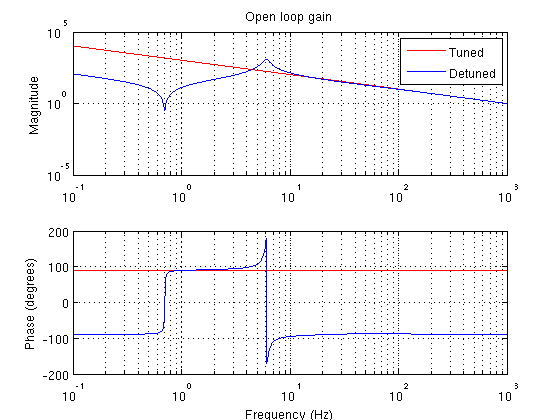

Setpoint locking example
scrtipt to demonstrate how to find the operating point where error signals are nulled.
Contents
set the paths
run ../setupLentickle.m
Set up optickle model and cucumber
we will use the example fabry perot model that comes with Optickle and create a simple corresponding cucumber
cucumber.opt = optFP;
cucumber.sensNames = {'REFL_I','REFL_Q'};
cucumber.probeSens = sparse(2,cucumber.opt.Nprobe);
cucumber.probeSens(1,getProbeNum(cucumber.opt,'REFL_I')) = 1;
cucumber.probeSens(2,getProbeNum(cucumber.opt,'REFL_Q')) = 1;
cucumber.mirrNames = {'IM','EM'};
cucumber.mirrDrive = sparse(cucumber.opt.Ndrive,2);
cucumber.mirrDrive(getDriveNum(cucumber.opt,'IX'),1) = 1;
cucumber.mirrDrive(getDriveNum(cucumber.opt,'EX'),2) = 1;
cucumber.sensDof = [ 1 , 0 ]; % REFL_I is length sensor
cucumber.dofNames = {'length'};
cucumber.ctrlFilt = [filtZPK([100],[0],1)];
cucumber.setUgfDof = [ 1000 ];
cucumber.dofMirr = [ 0
1 ]; % length feeds back to ETM
unityFilt = filtZPK([],[],1);
cucumber.mirrFilt = [ unityFilt , unityFilt ];
cucumber.pendFilt = [ unityFilt , unityFilt ]; % for simplicity, the actuator acts directly on position
Use lentickleLock to calculate the POS offset
% choose a desired error signal value, we only have one DOF, but in a more % complicated cucumber, this would be a vector of values errorOffset = -10; % first the zero detuning pos offset posZero = lentickleLock(cucumber,0); % and the detuned pos offset posDetune = lentickleLock(cucumber,errorOffset);
Calculate transfer functions for the different detunings
% solve the closed loop system f = logspace(-1,3,1000); resultsZero = lentickleEngine(cucumber,posZero,f); resultsDetune = lentickleEngine(cucumber,posDetune,f); % calculate the open loop gain for the length loop OLGZero = 1-1./pickleTF(resultsZero,'length','length'); OLGDetune = 1-1./pickleTF(resultsDetune,'length','length');
Plot the results
We see the detuned cavity shows an optical spring response.
figure(34) subplot(2,1,1) loglog(f,abs(OLGZero),'r',f,abs(OLGDetune),'b'); title('Open loop gain') ylabel('Magnitude') legend('Tuned','Detuned') xlim([min(f) max(f)]) grid on subplot(2,1,2) semilogx(f,180/pi*angle(OLGZero),'r',f,180/pi*angle(OLGDetune),'b'); ylabel('Phase (degrees)') xlabel('Frequency (Hz)') xlim([min(f) max(f)]) grid on